Toward an American Culture
HIST 101: American History to 1865
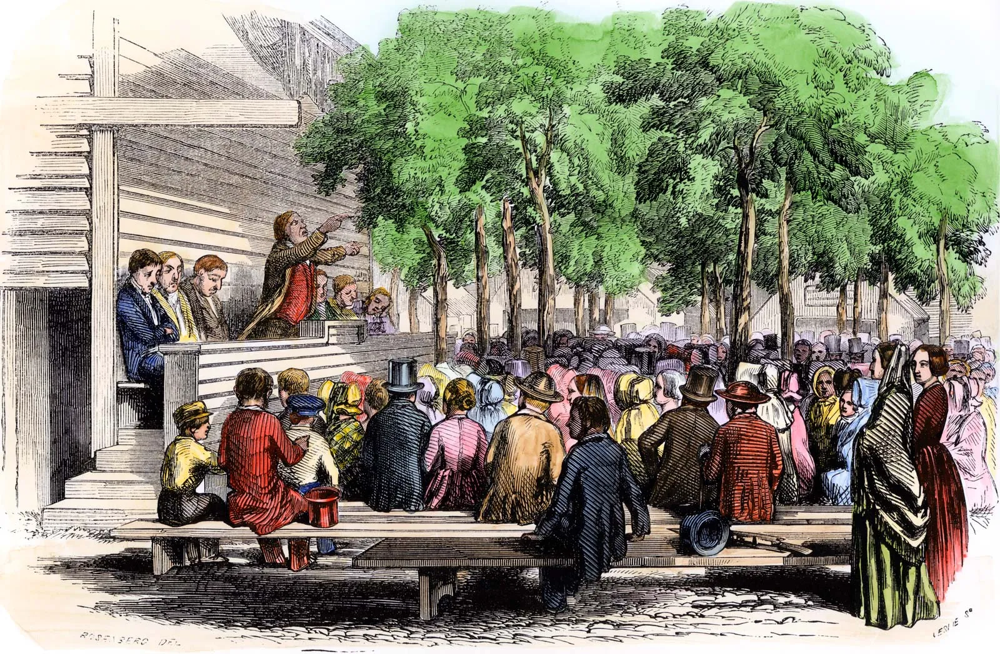
From the 1790s, a series of intense religious revivals took place on the western frontier, spreading throughout the country by the 1850s. This became known as the Second Great Awakening.
Large, emotional gatherings where people experienced conversion
Ordinary people claimed spiritual authority, not just ministers or elites
Methodists and Baptists surged ahead of older churches
Birth of new sects like the Mormons, Adventists, and Shakers
Events understood as signs of God's plan
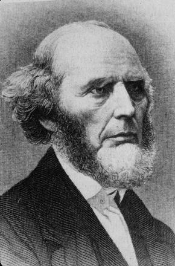
"You are not helpless sinners waiting for God's inscrutable decree. You can choose salvation today!"
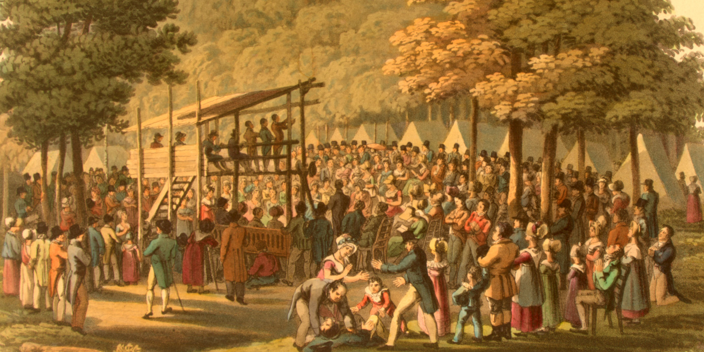
Often cited as the most dramatic early revival
Methodist ministers, usually young men, traveled vast circuits on horseback, bringing religion to frontier communities.
Simple messages: repentance, personal faith, conversion experience
Plain language: spoke with passion rather than polished theology
Accessible: reached ordinary people regardless of class or education
Definition: The process by which religious authority, practice, and interpretation shifted from elites to ordinary people
Emerged as exhorters, prayer leaders, and spiritual guides—gaining religious authority despite limited political rights
Established vibrant churches, such as the AME, which grew to 20,000 members by 1850, expanding the SGA's influence and supporting education and moral reform
Ordinary believers took active roles in worship, testimony, and church governance—religion became truly participatory
Result: Christianity became more participatory and emotional—broadening religious engagement to foster civic and moral cohesion among diverse groups, including women and African Americans
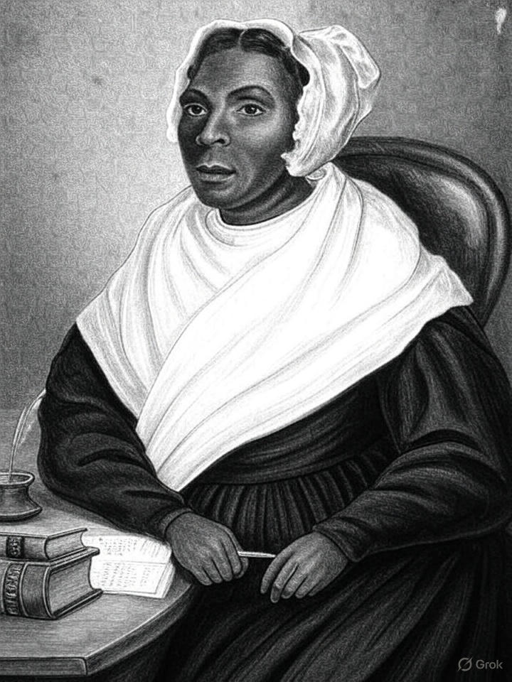
Limitations: While women gained religious authority, they were still barred from formal ordination (with rare exceptions like Phoebe Palmer). Their authority was real but constrained by gender norms. Black women faced additional barriers of racism but created powerful networks through churches and reform societies.
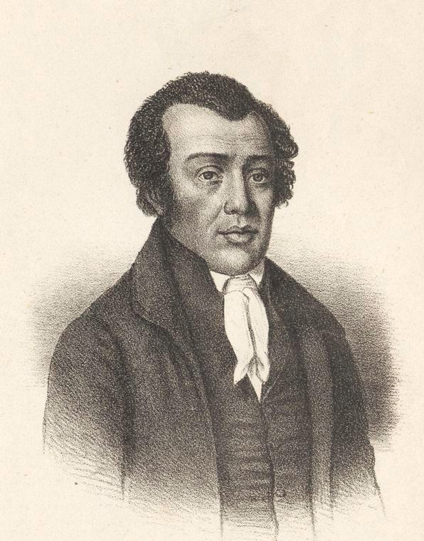
Significance: The Burned-Over District shows how religious enthusiasm could produce both mainstream reform and radical experimentation. It was a laboratory for democratic religion and social change.
People dissatisfied with established churches left to form independent groups, rejecting traditional religious institutions for a more personal, direct relationship with God.
The religious ferment produced entirely new movements, many uniquely American:
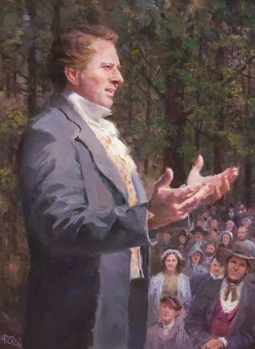
Founded by Joseph Smith in upstate New York's "Burned-Over District." Claimed new revelations—Book of Mormon, visions of angel Moroni. Emphasized restoration of true Christianity and millennial expectation. Faced persecution and moved westward.
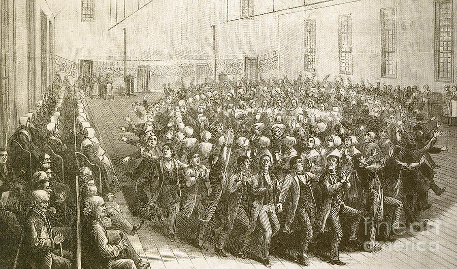
Founded by Mother Ann Lee. Practiced celibacy and communal living. Emphasized equality of sexes and ecstatic worship with dancing. Known for exceptional craftsmanship, simple design, and utopian communities.
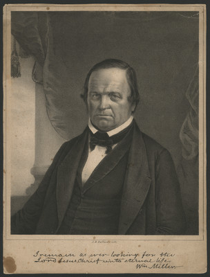
Emerged from William Miller's preaching about Christ's imminent return. Predicted Christ would return in 1844—"Great Disappointment" when He did not appear. Some followers reorganized as Seventh-day Adventists, emphasizing prophecy and health reform.
Americans interpreted daily events and history itself as part of God's cosmic drama. Suffering, disasters, political changes—all read as divine signs and messages.
Cholera epidemics seen as divine punishment or wake-up calls for moral reform
Westward expansion interpreted as God's plan—seeds of "Manifest Destiny"
Reform movements (temperance, abolition, women's rights) seen as fulfilling divine purpose
Ordinary Americans believed they were actors in a cosmic story.
This gave urgency to social reform—if history is God's story, then changing society is a moral duty.
Evangelicals promoted standards like temperance and Sabbath observance to foster self-discipline and community cohesion, values embraced by diverse groups, including African American congregations.
Challenged established religious hierarchies and reinvigorated American Christianity with emotional vitality
Shifted spiritual power from educated clergy to common believers, making religion accessible to all classes
Created uniquely American denominations and sects that would shape national identity
Framed how Americans would interpret everything—from personal struggles to national destiny—as part of God's plan
The Second Great Awakening transformed not just American religion, but American culture, politics, and social reform movements for generations to come.
The Second Great Awakening didn't just change churches—it transformed American society
Temperance, abolitionism, women's rights, prison reform, education reform—all energized by evangelical Christianity
Emphasized self-improvement, moral discipline, and individual agency—personal transformation as path to social transformation
These same values would become the cultural markers of the emerging Northern middle class
The SGA inspired reforms like temperance and abolition, which promoted moral discipline and civic responsibility across diverse groups, including African American leaders like Maria W. Stewart.
Core Idea: Religious revival inspired moral activism. If individuals could be saved and perfected, so could society.
The Second Great Awakening taught that salvation was a choice. If individuals could choose righteousness, they could also choose to eliminate social sins like drunkenness, slavery, and ignorance.
Campaign against alcohol consumption. American Temperance Society (1826). Women-led organizations. Led to Prohibition movement.
Movement to end slavery immediately. Religious argument: slavery is sin. Key figures: William Lloyd Garrison, Frederick Douglass, Harriet Tubman.
Advocacy for women's suffrage, property rights, education. Emerged from abolitionism. Seneca Falls Convention (1848).
Campaign for humane treatment of prisoners and mentally ill. Dorothea Dix led asylum reform. Pennsylvania system of solitary confinement.
Free, universal public schools. Horace Mann in Massachusetts. Protestant-inflected moral education. Sunday schools for children.
Opposition to war and violence. American Peace Society (1828). Some embraced absolute pacifism.
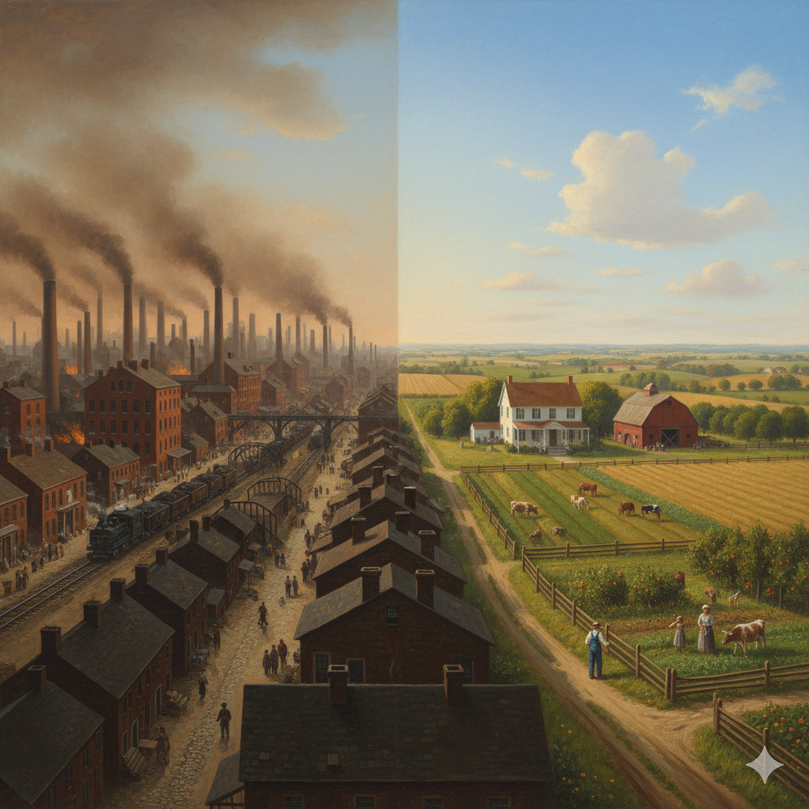
Shopkeepers, traders, and commercial entrepreneurs connecting rural and urban economies
Artisans who transformed small workshops into larger manufacturing enterprises
Agricultural producers growing crops for commercial sale rather than subsistence
A new class defined not just by wealth, but by values of self-discipline, moral improvement, and economic ambition
New England played a disproportionate role in the making of middle-class culture—exporting Yankee values of work ethic, moral reform, and self-improvement throughout the North.
For the Yankee middle class, liberty meant self-ownership and the freedom of action and ambition.
Equality meant equality of opportunity, not outcome.
This redefinition would become fundamental to American capitalism and individualism—but also created tensions with ideas of communal obligation and structural inequality.
Women's civic duty centered on raising virtuous, educated sons to sustain the republic
Industrialization and the Market Revolution divided public (male) and private (female) realms
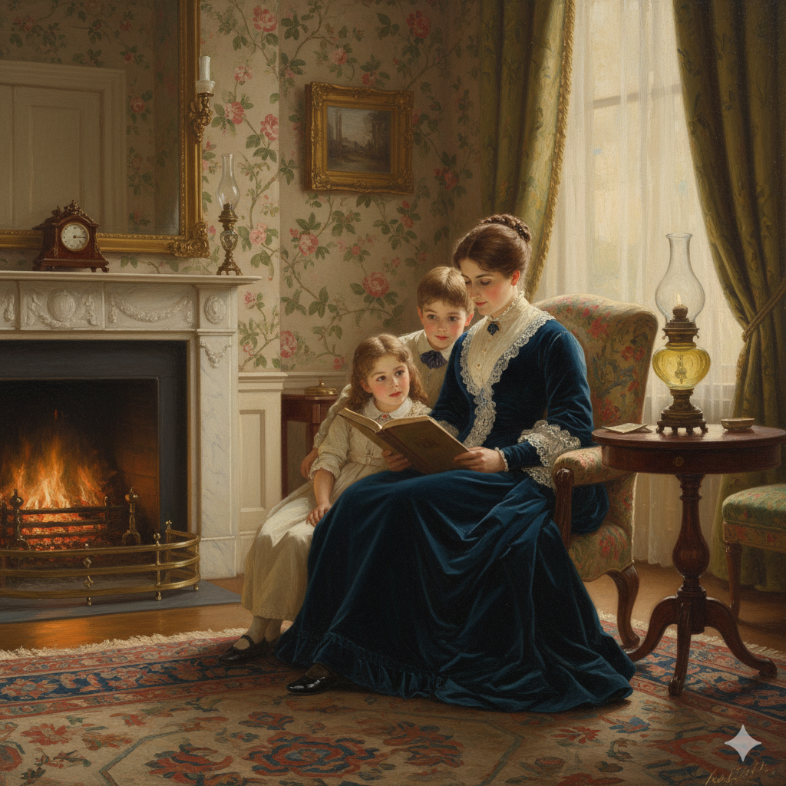
Ideal of womanhood defined by four cardinal virtues:
Women positioned as moral anchors amid market chaos—guardians of virtue, not participants in politics or commerce.
The Cult of Domesticity elevated women’s moral influence, fostering stable families that supported evangelical reforms and republican values.
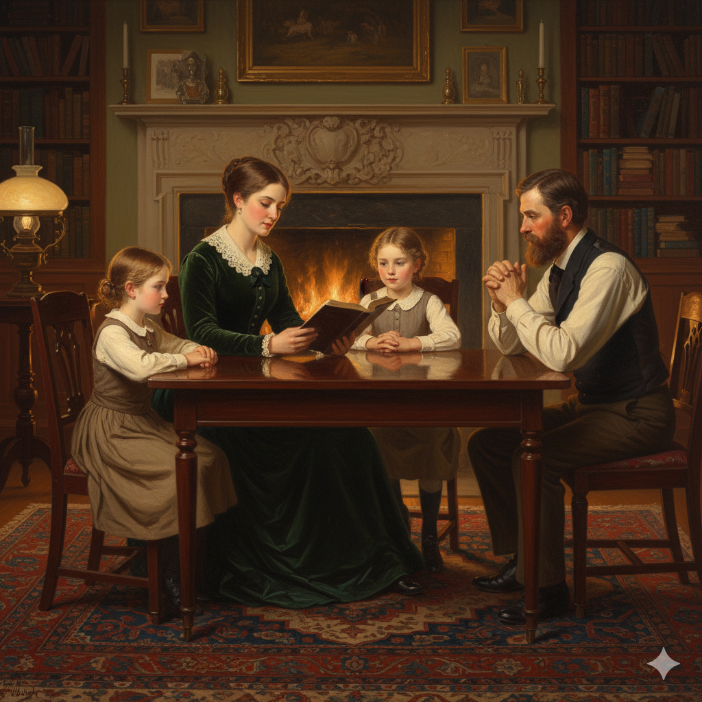
Domestic fiction and publications like Godey's Lady's Book extended moral influence, teaching proper domesticity
Middle-class domestic ideals distinguished "respectable" women from working-class and immigrant women, who were often portrayed as morally suspect for working outside the home.
Class, Race, and Regional Realities
The Cult of Domesticity reflected the experiences of white, middle-class, northern women. It required leisure, literacy, and financial stability—privileges of class. Free Black and working-class women, while balancing economic roles, upheld moral leadership in their communities, contributing to the SGA’s broader impact.
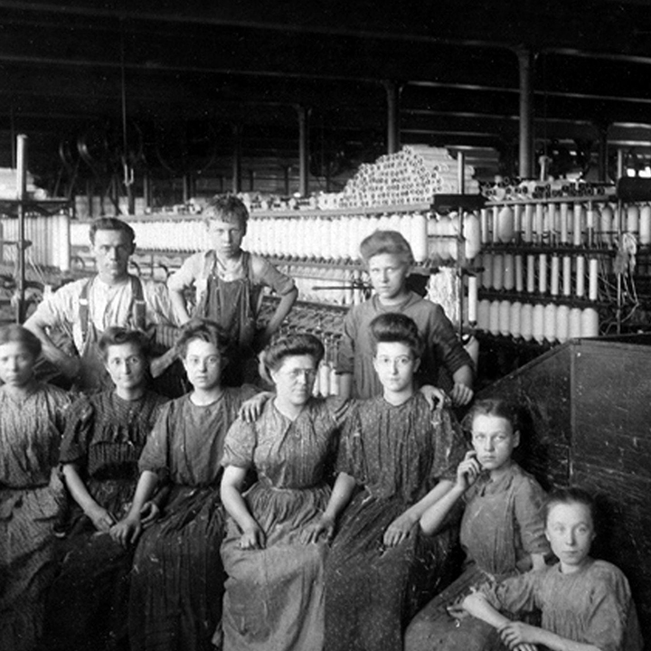
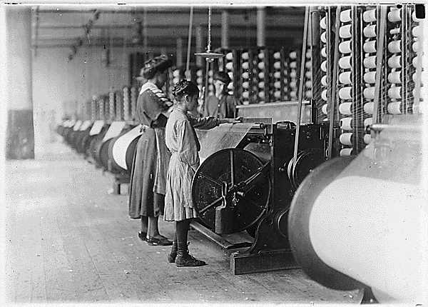
Forging Identity Outside the Cult of Domesticity
Free Black women lived outside the "separate spheres" ideal yet forged their own definitions of respectability and leadership, combining economic necessity with moral authority.
Founded schools, mutual aid societies, and churches such as the AME (African Methodist Episcopal) movement
Advocated for education, racial uplift, and abolition. Created intellectual and moral communities that paralleled white middle-class activism while confronting racism and exclusion
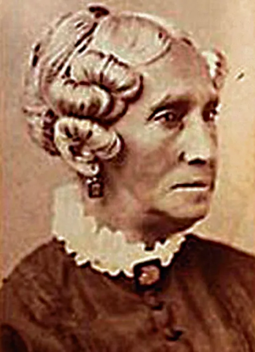
First American woman to lecture publicly on politics and women's rights (1832). Called for Black education and self-determination.
Founded schools for Black children in Philadelphia. Active in abolitionist and women's rights movements.